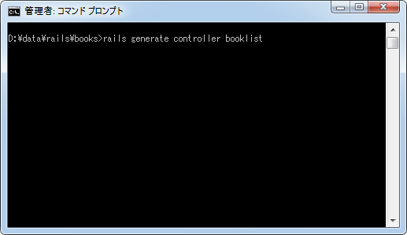
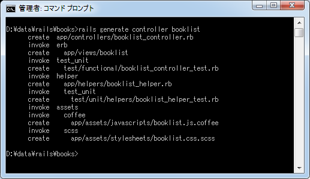
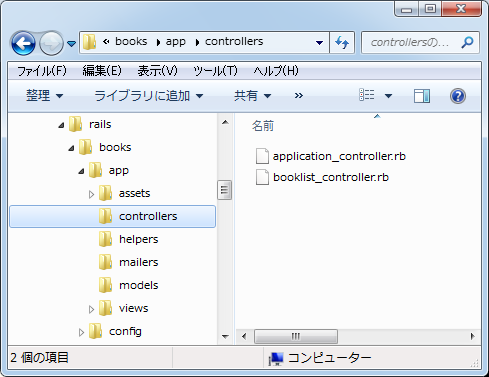
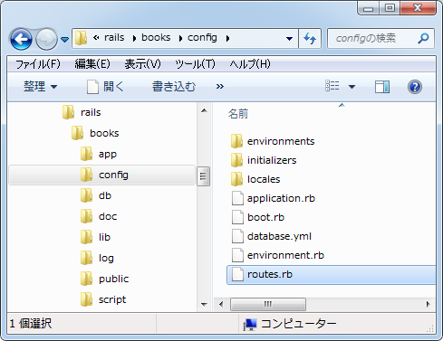
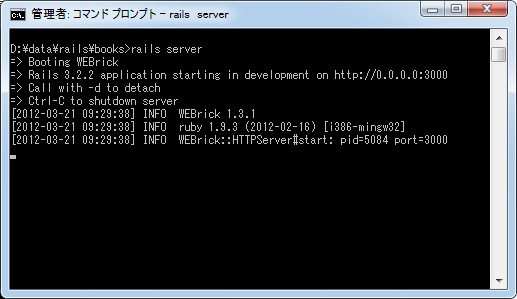
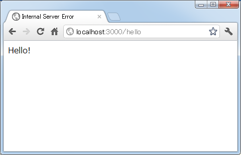
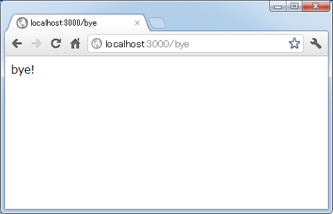

コントローラとアクションの作成とルーティングの設定
Railsアプリケーションで利用者からのリクエストで呼び出されるのがコントローラの中に作成されたアクションです。ここではコントローラとアクションの動作を確認するために簡単なサンプルを作成してみます。また合わせてルーティングも記述方法も解説します。なおこのページではそれぞれの項目について詳細には解説していません。どんな感じで作成するのかだけを見ておいて下さい。
1.コントローラの作成
2.アクションの作成
3.ルーティングの設定
4.動作確認
※ コントローラに関する詳細は「コントローラとアクション」、ルーティングに関する詳細は「ルーティングの設定」をご参照下さい。
コントローラの作成
「RailsにおけるMVC」で記載したとおり、コントローラ及びアクションが利用者から呼び出され、コントローラはモデルを使って必要なデータを集め、さらにビューを使い利用者へ返す結果を作成します。
それではまずコントローラを作成します。「(Railsアプリケーションのルート)」ディレクトリに移動し、次のようにコマンドを実行して下さい。
rails generate controller コントローラ名
今回は「booklist」コントローラを作成してみます。(Enterキーを押してから反応があるまで少し時間が空きます)。
rails generate controller booklist

次のようにいくつかのファイルが自動的に作成されます。

この中の「app\controllers\booklist_controller.rb」がコントローラ本体に関する記述がされたファイルです。

それでは作成された「booklist_controller.rb」ファイルをテキストエディタで開いてみます。
class BooklistController < ApplicationController end
このようにコントローラを作成すると「ApplicationController」クラスを継承し、名前が「コントローラ名＋Controller」のクラスが定義されます(クラス名の先頭は大文字となります)。
アクションの作成
コントローラは作成されましたのでアクションを作成していきます。Railsアプリケーションではコントローラはクラスとして定義されましたが、アクションはコントローラクラスの中のメソッドとして定義されます。例えば「hello」というアクションを作成するということは「hello」というメソッドを定義することです。
それでは「hello」アクションと「bye」アクションを作成してみます。
class BooklistController < ApplicationController
def hello
render :text => 'Hello!'
end
def bye
render :text => 'bye!'
end
end
アクションを表すメソッドはpublicのメソッドとして定義して下さい(Rubyの場合、特に指定していない場合はpublicとなります)。今回作成したアクションはテスト用のため、アクションが呼び出されるとビューなどを使わずに直接利用者へテキストを返すように作成してあります。
※ メソッドの中に記述してある「render :text => 'Hello!'」の部分が利用者へテキストを返す部分となります。今回はコントローラやアクションのテストがメインなので、この部分の説明は行ないません。
ルーティングの設定
最後にルーティングの設定を行います。これは利用者側からどのように呼び出されたときにどのアクションを実行するのかを定義するものです。設定はアプリケーションを作成すると自動的に作成される「(Railsアプリケーションのルート)\config\routes.rb」ファイルに対して行ないます。

このファイルをテキストエディタで開いてみます。先頭に「#」が記載されている行はコメントなので、コメントを除くと次のように何も定義されていません。
Books::Application.routes.draw do end
数多く記載されているコメントはルーティングの記述方法に関するサンプルです。例えば一番最後に記載されている次の部分を見て下さい。
Books::Application.routes.draw do
# This is a legacy wild controller route that's not recommended for RESTful applications.
# Note: This route will make all actions in every controller accessible via GET requests.
# match ':controller(/:action(/:id))(.:format)'
end
これは以前よく使われたいたルーティングの記述方法です。先頭のコメントを外すことで有効となります。
ルーティングの記述方法は色々な方法があるのですが、今回は利用者が入力したURLのパスに対してどのアクションを呼び出すのかを1つ1つ定義する方法を使ってみます。「routes.rb」ファイルの最初にあるコメント部分を見て下さい。
Books::Application.routes.draw do
# Sample of regular route:
# match 'products/:id' => 'catalog#view'
# Keep in mind you can assign values other than :controller and :action
end
この形式を使い、利用者がブラウザから「http://localhost:3000/hello」を開いた時に「booklist」コントローラの「hello」アクションが呼び出され、「http://localhost:3000/bye」を開いた時に「bye」アクションが呼び出されるようにルーティングを定義します。
Books::Application.routes.draw do match 'hello' => 'booklist#hello' match 'bye' => 'booklist#bye' end
これでルーティングの設定も完了です。
動作確認
それではRailsアプリケーションを起動してここまでの動作を確認してみます。コマンドプロンプトを起動し、起動させたいアプリケーションのルートディレクトリに移動して下さい。そして「rails server」と実行して下さい。

ブラウザから次のURLへアクセスして下さい。
http://localhost:3000/hello
設定されたルーティングに従い、「booklist」コントローラの「hello」アクションが呼び出され、画面に次のように表示されます。

今度は次のURLへアクセスして下さい。
http://localhost:3000/bye
「booklist」コントローラの「bye」アクションが呼び出され、画面に次のように表示されます。

このようにRailsアプリケーションを起動した後で、利用者からブラウザ経由でリクエストを送信し、それによってアクションを実行し結果を利用者へ返すことが出来ました。
今回はコントローラ及びアクションの作成、そしてルーティングの設定までを試しました。今回のサンプルではアクションの中で直接利用者に結果を返していましたが、次のページではビューを使って結果を返す方法を試します。
( Written by Tatsuo Ikura )

著者 / TATSUO IKURA
初心者～中級者の方を対象としたプログラミング方法や開発環境の構築の解説を行うサイトの運営を行っています。